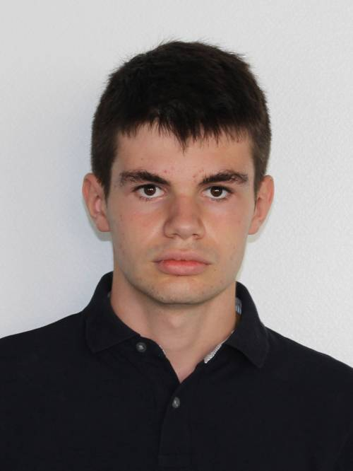
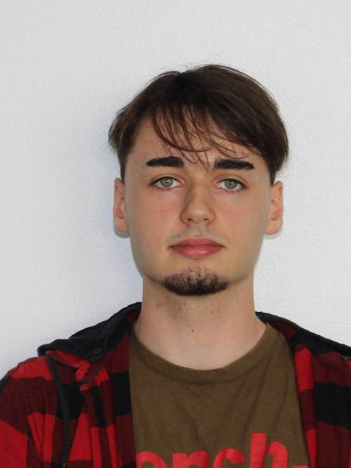
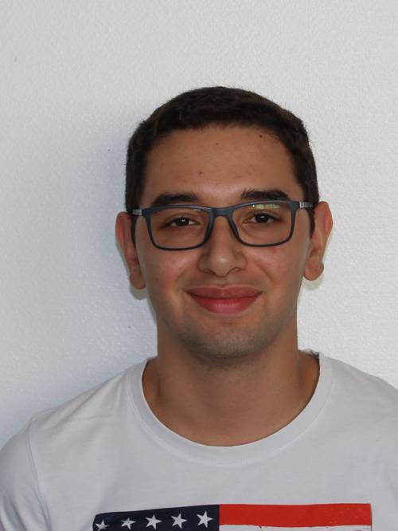
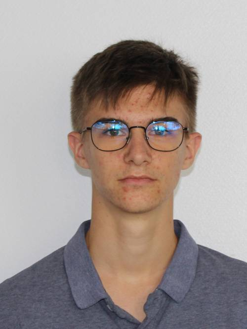

A Slime Journey's est un jeu de plateforme créer pour le projet S2 du groupe Arcln prod.
Ce jeu est actuellement en cours de développement, et est développé sur le moteur Unity Engine.
Ce jeu nous permet d'être un slime parcourant un univers médiéval à la recherche du château de ce royaume, aussi beau que dangereux. A travers son voyage, notre personnage fera face à de nombreux dangers, allant de simples sangliers à des monstres aussi impressionant que dangereux.
Le slime apprendra aussi différentes capacités au fur et à mesure des niveaux, qu'il pourra ensuite réutiliser plus tard, tel qu'un double saut, la capacité à sauter depuis un mur ou encore des attaques uniques.
Durant son épopée, le joueur parcourira de nombreux décors très variés d'un style médieval pour une meilleure immersion.
Lors du premier niveau, le joueur se retrouve à la merci d'une fôret aggressive, il devra surmonter ses dangers afin de passer au niveau suivant, qui sera un peu plus proche
de son but final, le château. En effet, chaque niveau possède ses propres décors, de plus en plus proche d'un château. Enfin, lors de certains niveaux clés, le joueur devra faire
face à de redoutables boss.
Afin de le soutenir, le joueurs pourra faire appel à un de ses amis et jouer en multijoueur en ligne afin de profiter du jeu avec un ami.
Le groupe Arcln prod est constitué de 4 personnes, en premier, nous avons :
Alexis Le-Gall, il s'occupe de la création de niveau et s'occupe de la communication.

Viens ensuite Enzo Juhel, il s'occupe en partie du développement du jeu, tout en donnant une grande partie des idées permettant
au jeu d'être unique. Il est aussi le chef du projet.

Omid Sheibanifar est lui aussi un membre de ce groupe, il s'occupe des animations du jeu, et d'une partie du développement

Enfin, viens Maxime Douillard, un membre du groupe qui s'occupe du développement du jeu, ainsi que d'une partie de la communication.

Télécharger le cahier des charges du projet
Télécharger le rapport de soutenance